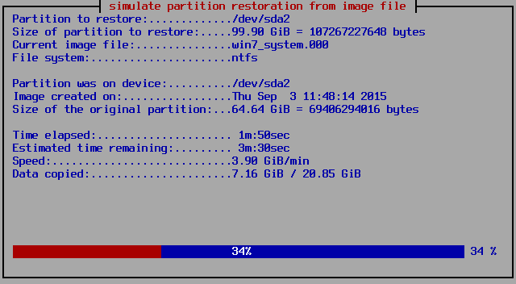

<!DOCTYPE html>

<head>
	
	<meta charset="UTF-8" lang="da"/>

	<title>Backup med Linux - Thomas Jensen</title>

	<link rel="stylesheet" href="../css/styles/docco.css" />

	<link rel="stylesheet" href="../css/style.css" />

	<link href='http://fonts.googleapis.com/css?family=Ubuntu+Mono|Ubuntu|Ubuntu+Condensed' rel='stylesheet' type='text/css'>
	
	<script src="../js/toc2.js" type="text/javascript"></script>
	<script src="https://code.jquery.com/jquery-2.2.2.js"></script>
	<script src="js/highlight.pack.js" type="text/javascript"></script>
	<script>hljs.initHighlightingOnLoad();</script>


	

</head>

<!-- 

code highlighter : https://highlightjs.org/

code converter : http://www.freebits.co.uk/convert-html-code-to-text.html 

-->


<html>

<body onload="generateTOC(document.getElementById('toc'));">

<footer id="license"></footer>

	<script> $( "#license" ).load( "license.html" ); </script>

	<div id="toc">
	
		<p>Indholdsfortegnelse</p>
	
	</div>
	
<div class="title">Backup med Linux</div>
	
<h1>Backup guiden</h1>

<p>I denne guide vil du lære at tage backup af din computers drev, ved hjælp af SystemrescueCD, som er en Linux distribution der er designet til netop denne opgave.</p>

<p>I denne guide anvendes 2 forskellige computerkonfigurationer. En standard Windows7 computer med 2 harddiske samt den PC, som bliver installeret i <a href="install_16.04.LTS.html" target="_blank">Installation af Ubuntu 16.04 LTS</a> hvor man også har kørt guiden <a href="harddiske.html" target="_blank">Administration og montering af harddiske, USB- og netværksdrev</a></p>

<table class="">
	<thead>
		<tr>
			<th>PC</th>
			<th>Harddisk</th>
			<th>Partition</th>
			<th>Betegnelse</th>
			<th>Filsystem</th>
			<th>Størrelse</th>
		</tr>
	</thead>
	<tbody>
		<tr>
			<td rowspan="4">Ubuntu</td>
			<td rowspan="3">1</td>
			<td>/dev/sda1</td>
			<td>/</td>
			<td>ext4</td>
			<td>46,6 GB</td>
		</tr>
		<tr>
			<td>/dev/sda2</td>
			<td>swap</td>
			<td>swap</td>
			<td>3,8 GB</td>
		</tr>
		<tr>
			<td>/dev/sda3</td>
			<td>/data</td>
			<td>ext4</td>
			<td>28,9 GB</td>
		</tr>
		<tr>
			<td>2</td>
			<td>/dev/sdb1</td>
			<td>ext4</td>
			<td>/srv/newdisk</td>
			<td>100 MB</td>
		</tr>
		<tr>
			<td rowspan="3">Windows</td>
			<td rowspan="2">1</td>
			<td>Disk 0 - partition 1</td>
			<td>NTFS</td>
			<td>bootdrev (ikke synligt)</td>
			<td>100 MB</td>
		</tr>
		<tr>
			<td>Disk 0 - partition 2</td>
			<td>NTFS</td>
			<td>C:</td>
			<td>99,9 GB</td>
		</tr>
		<tr>
			<td>2</td>
			<td>Disk 1 - partition 1</td>
			<td>NTFS</td>
			<td>D:</td>
			<td>100 GB</td>
		</tr>
	</tbody>
</table>


<p>Jeg regner med at man som udgangspunkt har sat sig ind i hvordan man tilgår computerens partitioner og har en grundlæggende forståelse for kommandolinien. Hvis du gerne vil have det genopfriskes kan du gå til guiden: <a href="harddiske.html" target="_blank">Administration og montering af harddiske, USB- og netværksdrev</a>.</p>


<h1>SystemrescueCD</h1>

<p>SystemrescueCD er et værktøj der er baseret på Linux, og som giver adgang til at kunne udføre low level administration af computere, herunder adgang til FSArchiver. SystemrescueCD er et komplet styresystem der downloades i en ISO fil der kan brændes ud på en CDROM eller USB Disk. Det bliver ofte opdateret, så sørg for at have den nyeste version. Her anvendes version 4.7.2</p>

<p>Fordelen ved at anvende SystemrescueCD er:</p>

<ul class="disc">
	<li>Den bliver opdateret ofte</li>
	<li>Fylder ikke mere end 4-500 MB</li>
	<li>Den kan bootes så alt lægges i en cached memory</li>
	<li>Den er hurtig</li>
	<li>Den har alt hvad en systemadmin ønsker installeret</li>
</ul>


<p>Om SystemrescueCD: <a href="https://www.system-rescue-cd.org/SystemRescueCd_Homepage" target="_blank">https://www.system-rescue-cd.org/SystemRescueCd_Homepage</a></p>

<p>Tilgængelige programmer: <a href="https://www.system-rescue-cd.org/System-tools" target="_blank">https://www.system-rescue-cd.org/System-tools</a></p>

<p>Hent SystemrescueCD: <a href="http://www.sysresccd.org/Download" target="_blank">http://www.sysresccd.org/Download</a></p>

<p>Efter den er hentet brændes ISO filen ud på en CDROM eller USB disk og computeren bootes. Når disken er bootet op bliver man præsenteret med boot muligheder. Her vælger jeg som regel nr. 2, da den opretter hele disken på et RAM-drev. Det lidt længere tid at loade SystemrescueCD, men til gengæld reagerer den hurtigere når man arbejder. Boot proceduren er:</p>

<figure id="">

	

	<figcaption></figcaption>

</figure>

<p>Herefter skal tasteturet vælges. Vælg 11 (dk - dansk tastetur)</p>

<figure id="">

	

	<figcaption></figcaption>

</figure>

<p>Herefter er SystemrescueCD klar til at modtage dine kommandoer.</p>

<figure id="">

	

	<figcaption></figcaption>

</figure>

<h1>Opsætning af SystemrescueCD</h1>

<p>Hvis man ønsker at anvende Systemrescue på netværk er der nogle enkelte trin man skal have gjort:</p>

<ul class="disc">
	<li>Sat <span class="inl_cmd">root</span>-password</li>
	<li>konfigurere netværk</li>
</ul>

<span class="afsnit"><span class="inl_cmd">root</span>-password</span>

<p>Opret password til root på SystemrescueCD. Koden skal være af en vis længde og indeholde både små og store bogstaver f.eks. <span class="inl_cmd">123qweASD</span>:</p>

<code class="cmd">passwd root</code>

<pre class="black">
<span class="green">root@sysresccd</span> <span class="blue">/root</span> % passwd root
Changing password for root
Enter the new password (minimum of 5 characters)
Please use a combination of upper and lower case letters and numbers.
New password: 
Re-enter new password: 
passwd: password changed.
</pre>

<span class="afsnit">Konfigurere netværk</span>

<p>For at få et overblik over netværket anvendes <span class="inl_cmd">ifconfig</span></p>

<pre class="black">
<span class="green">root@sysresccd</span> <span class="blue">/root</span> % ifconfig
enp0s3: flags=4163<UP,BROADCAST,RUNNING,MULTICAST>  mtu 1500
        inet 192.168.0.63  netmask 255.255.255.0  broadcast 192.168.0.255 <span class="red">&lt;-- netværksopl.</span>
        inet6 fe80::a00:27ff:fe74:1ffb  prefixlen 64  scopeid 0x20<link>
        ether 08:00:27:74:1f:fb  txqueuelen 1000  (Ethernet)
        RX packets 290  bytes 39943 (39.0 KiB)
        RX errors 0  dropped 0  overruns 0  frame 0
        TX packets 124  bytes 17351 (16.9 KiB)
        TX errors 0  dropped 0 overruns 0  carrier 0  collisions 0

lo: flags=73<UP,LOOPBACK,RUNNING>  mtu 65536
        inet 127.0.0.1  netmask 255.0.0.0
        inet6 ::1  prefixlen 128  scopeid 0x10<host>
        loop  txqueuelen 0  (Local Loopback)
        RX packets 0  bytes 0 (0.0 B)
        RX errors 0  dropped 0  overruns 0  frame 0
        TX packets 0  bytes 0 (0.0 B)
        TX errors 0  dropped 0 overruns 0  carrier 0  collisions 0
</pre>

<p>Læg både mærke til navnet på netværkskortet (her: enp0s3) og IP-adressen.</p>

<p>Hvis man ønsker at ændre netværksopsætningen kan <span class="inl_cmd">ifconfig</span> også anvendes f.eks:</p>

<code class="cmd">ifconfig enp0s3 192.168.0.15 netmask 255.255.255.0</code>

<pre class="black">
<span class="green">root@sysresccd</span> <span class="blue">/root</span> % ifconfig
enp0s3: flags=4163<UP,BROADCAST,RUNNING,MULTICAST>  mtu 1500
        inet 192.168.0.15  netmask 255.255.255.0  broadcast 192.168.0.255 <span class="red">&lt;-- netværksopl.</span>
        inet6 fe80::a00:27ff:fe74:1ffb  prefixlen 64  scopeid 0x20<link>
        ether 08:00:27:74:1f:fb  txqueuelen 1000  (Ethernet)

		...
</pre>

<span class="afsnit">SSH adgang</span>

<p>For at få SSH adgang til computeren med SystemrescueCD (IP: 192.168.0.63) anvendes kommandoen:</p>

<code class="cmd">ssh root@192.168.0.63</code>

<pre class="ubuntu_terminal">
<span class="green1">thoj@thoj-VirtualBox</span>:<span class="blue1">~</span>$ ssh root@192.168.0.63
The authenticity of host '192.168.0.63 (192.168.0.63)' can't be established.
ED25519 key fingerprint is 36:23:66:4e:92:bc:fa:57:c3:f5:71:86:79:de:b8:ad.
Are you sure you want to continue connecting (yes/no)? yes
Warning: Permanently added '192.168.0.63' (ED25519) to the list of known hosts.
Password: 
<span class="green">root@sysresccd</span> <span class="blue">/root</span> % 
</pre>

<h1>Overblik over computerens drev</h1>

<p>For at få et overblik over computerens drev og partitioner anvendes:</p>

<code class="cmd">lsblk -o name,fstype,size,type,mountpoint</code>

<p>Ubuntu PC</p>

<pre class="black">
<span class="green">root@sysresccd</span> <span class="blue1">/root</span> % lsblk -o name,fstype,size,type,mountpoint
NAME   FSTYPE     SIZE TYPE MOUNTPOINT
sda               100G disk 
├─sda1 ext4      46.6G part 
├─sda2 swap       3.8G part 
└─sda3 ext4      28.9G part 
sdb               100G disk 
└─sdb1 ext4       100G part 
sr0    iso9660  459.9M rom  
loop0  squashfs 338.5M loop /livemnt/squashfs
</pre>

<p>Windows PC</p>

<pre class="black">
<span class="green">root@sysresccd</span> <span class="blue1">/root</span> % lsblk -o name,fstype,size,type,mountpoint
NAME   FSTYPE     SIZE TYPE MOUNTPOINT
sda               100G disk 
├─sda1 ntfs       100M part 
└─sda2 ntfs      99.9G part 
sdb               100G disk 
└─sdb1 ntfs       100G part 
sr0    iso9660  459.9M rom  
loop0  squashfs 338.5M loop /livemnt/squashfs
</pre>

<p>Følgende gælder altså</p>

<p>Ubuntu computeren har:</p>

<ul class="disc">
	<li>/dev/sda1 (ext4)</li>
	<li>/dev/sda2 (swap)</li>
	<li>/dev/sda3 (ext4)</li>
	<li>/dev/sdb1 (ext4)</li>
</ul>


<table class="">
	<thead>
		<tr>
			<th>Computer</th>
			<th>Partitioner</th>
			<th>Filsystem</th>
			<th>DVD-drev</th>
			<th>Ramdiske</th>
		</tr>
	</thead>
	<tbody>
		<tr>
			<td rowspan="4">Ubuntu</td>
			<td>/dev/sda1</td>
			<td>/dev/sr0</td>
			<td>loop0</td>
		</tr>
		<tr>
			<td></td>
		</tr>
		<tr>
			<td>Windows</td>
			<td></td>
		</tr>
	</tbody>
</table>


<table class="">
	<thead>
		<tr>
			<th></th>
			<th></th>
		</tr>
	</thead>
	<tbody>
		<tr>
			<td>to partitioner</td>
			<td><span class="inl_cmd">/dev/sda1</span> <br/> <span class="inl_cmd">/dev/sda2</span></td>
		</tr>
		<tr>
			<td>Et CDROM drev</td>
			<td><span class="inl_cmd">/dev/sr0</span></td>
		</tr>
		<tr>
			<td>Et RAM drev</td>
			<td><span class="inl_cmd">/dev/loop0</span></td>
		</tr>
	</tbody>
</table>

<p>Selve SystemrescueCD kører i RAM-drevet (<span class="inl_cmd">/dev/loop0</span>) og påvirker derfor ikke harddisken.</p>

<p>For at se partitionernes filsystem anvender vi <span class="inl_cmd">fdisk -l</span>.</p>

<pre class="black">
<span class="green">root@sysresccd</span> <span class="blue1">/root</span> % fdisk -l

Disk /dev/loop0: 317.7 MiB, 333099008 bytes, 650584 sectors
Units: sectors of 1 * 512 = 512 bytes
Sector size (logical/physical): 512 bytes / 512 bytes
I/O size (minimum/optimal): 512 bytes / 512 bytes
Disk /dev/sda: 100 GiB, 107374182400 bytes, 209715200 sectors
Units: sectors of 1 * 512 = 512 bytes
Sector size (logical/physical): 512 bytes / 512 bytes
I/O size (minimum/optimal): 512 bytes / 512 bytes
Disklabel type: dos
Disk identifier: 0x528a52f7

Device     Boot  Start       End   Sectors  Size Id Type
/dev/sda1  *      2048    206847    204800  100M  7 <span class="red">HPFS/NTFS/exFAT</span>
/dev/sda2       206848 209713151 209506304 99.9G  7 <span class="red">HPFS/NTFS/exFAT</span>

</pre>

<p>Her kan vi se at både <span class="inl_cmd">/dev/sda1</span> og <span class="inl_cmd">/dev/sda2</span> er NTFS partitioneret (her markeret med rød)</p>

<h2>Partitionering af harddiske</h2>

<p>Hvis windows 7 skal installeres på en helt ny harddisk skal den først partitioneres. Windows 7 har to partitioner: en til boot og en til systemet. Boot partitionen er som regel 100MB stor.</p>

<p>Det der skal gøres er:</p>

<ol class="">
	<li>Tjek harddisk opsætning med <span class="inl_cmd">lsblk</span>.</li>
	<li>Opret <span class="inl_cmd">/dev/sda1</span> til at være 100Mb og have NTFS som filsystem</li>
	<li>Opret <span class="inl_cmd">/dev/sda2</span> fylde resten af disken og have NTFS som filsystem</li>
	<li>Sæt <span class="inl_cmd">/dev/sda1</span> til at være boot partition</li>
	<li>Skriv den nye opsætning til harddisken</li>
	<li>Thek at opsætningen er korrekt udført.</li>
</ol>

<h3>Tjek harddisk opsætningen</h3>

<code class="cmd">lsblk</code>

<pre class="black">
<span class="green">root@sysresccd</span> <span class="blue1">/root</span> % lsblk
NAME  MAJ:MIN RM   SIZE RO TYPE MOUNTPOINT
sda     8:0    0   100G  0 disk 
sr0    11:0    1 437.9M  0 rom  /livemnt/boot
loop0   7:0    0 317.7M  1 loop /livemnt/squashfs</pre>

<p>I dette tilfælde er har harddisken <span class="inl_cmd">sda</span> ingen partitioner</p>

<h3>Opret <span class="inl_cmd">/dev/sda1</span> og <span class="inl_cmd">/dev/sda2</span></h3>

<p>Kør <span class="inl_cmd">fdisk</span> på /dev/sda</p>

<code class="cmd">fdisk /dev/sda</code>

<pre class="black">
<span class="green">root@sysresccd</span> <span class="blue1">/root</span> % fdisk /dev/sda

Welcome to fdisk (util-linux 2.25.2).
Changes will remain in memory only, until you decide to write them.
Be careful before using the write command.

Device does not contain a recognized partition table.
Created a new DOS disklabel with disk identifier 0x31dfa5a7.

Command (m for help): 
</pre>

<p>Skab et overblik over mulighederne ved at trykke <span class="inl_cmd">[m]</span></p>

<pre class="black">
Command (m for help): m

Help:

  DOS (MBR)
   a   toggle a bootable flag
   b   edit nested BSD disklabel
   c   toggle the dos compatibility flag

  Generic
   d   delete a partition
   l   list known partition types
   n   add a new partition
   p   print the partition table
   t   change a partition type
   v   verify the partition table

  Misc
   m   print this menu
   u   change display/entry units
   x   extra functionality (experts only)

  Save & Exit
   w   write table to disk and exit
   q   quit without saving changes

  Create a new label
   g   create a new empty GPT partition table
   G   create a new empty SGI (IRIX) partition table
   o   create a new empty DOS partition table
   s   create a new empty Sun partition table

</pre>

<p>Sæt <span class="inl_cmd">/dev/sda1</span> op på følgende måde:</p>

		<ol class="">
			<li>n - ny partition</li>
			<li>p - vælg primær</li>
			<li>1 - Vælg hvilken partition</li>
			<li>[Enter] - Vælg første cylinder (starten af disken)</li>
			<li>100M - Sæt disken til at være 100Mb</li>
			<li>t - ændr filsystemet</li>
			<li>l - viser dig tilgængelige filsystemer</li>
			<li>7 - Værdien for NTFS-filsystemet</li>
			<li>p - tjek at det er sat rigtigt op</li>
		</ol>

<p>Kontroller at <span class="inl_cmd">/dev/sda1</span> er 100M og partitionen er type 7 - HPFS/NTFS/exFAT (linie markeret med rødt).</p>

<pre class="black">
Command (m for help): p
Disk /dev/sda: 100 GiB, 107374182400 bytes, 209715200 sectors
Units: sectors of 1 * 512 = 512 bytes
Sector size (logical/physical): 512 bytes / 512 bytes
I/O size (minimum/optimal): 512 bytes / 512 bytes
Disklabel type: dos
Disk identifier: 0x31dfa5a7

Device     Boot Start    End Sectors  Size Id Type
<span class="red">/dev/sda1        2048 206847  204800  100M  7 HPFS/NTFS/exFAT</span>
</pre>

<p>Sæt <span class="inl_cmd">/dev/sda2</span> op på samme måde men ændre pkt. 5 på følgende måde:</p>

		<ol class="">
			<li>n - ny partition</li>
			<li>p - vælg primær</li>
			<li>2 - Vælg hvilken partition</li>
			<li>[Enter] - Vælg første cylinder (starten af disken)</li>
			<li>[Enter] - Vælger den sidste cylinder</li>
			<li>t - ændr filsystemet</li>
			<li>2 - Vælger partition 2</li>
			<li>l - viser dig tilgængelige filsystemer</li>
			<li>7 - Værdien for NTFS-filsystemet</li>
			<li>p - tjek at det er sat rigtigt op</li>
		</ol>

<p>Kontroller at <span class="inl_cmd">/dev/sda1</span> fylder resten af disken og partitionen er type 7 - HPFS/NTFS/exFAT (linie markeret med rødt).</p>

<pre class="black">
Command (m for help): p
Disk /dev/sda: 100 GiB, 107374182400 bytes, 209715200 sectors
Units: sectors of 1 * 512 = 512 bytes
Sector size (logical/physical): 512 bytes / 512 bytes
I/O size (minimum/optimal): 512 bytes / 512 bytes
Disklabel type: dos
Disk identifier: 0x31dfa5a7

Device     Boot  Start       End   Sectors  Size Id Type
/dev/sda1         2048    206847    204800  100M  7 HPFS/NTFS/exFAT
<span class="red">/dev/sda2       206848 209715199 209508352 99.9G  7 HPFS/NTFS/exFAT</span>
</pre>

<p>Sæt <span class="inl_cmd">/dev/sda1</span> til at være boot drev</p>

<ol class="">
	<li>a - sæt boot flaget</li>
	<li>1 - vælg den første harddisk</li>
	<li>p - tjek at første partition er sat til boot dvs. der sidder en asterisk (<span class="inl_cmd">*</span>) i boot kolonnen</li>
</ol>

<pre class="black">
Command (m for help): p
Disk /dev/sda: 100 GiB, 107374182400 bytes, 209715200 sectors
Units: sectors of 1 * 512 = 512 bytes
Sector size (logical/physical): 512 bytes / 512 bytes
I/O size (minimum/optimal): 512 bytes / 512 bytes
Disklabel type: dos
Disk identifier: 0x31dfa5a7

Device     Boot  Start       End   Sectors  Size Id Type
/dev/sda1  <span class="red">*</span>      2048    206847    204800  100M  7 HPFS/NTFS/exFAT
/dev/sda2       206848 209715199 209508352 99.9G  7 HPFS/NTFS/exFAT
</pre>

<p>Skriv ændringerne til disken</p>

<ol class="">
	<li>w - skriver ændringerne til disken</li>
</ol>

<pre class="black">
Command (m for help): w
The partition table has been altered.
Calling ioctl() to re-read partition table.
Syncing disks.

<span class="green">root@sysresccd</span> <span class="blue1">/root</span> % 
</pre>

<p>Tjek systemets harddiske</p>

<code class="cmd">lsblk</code>

<pre class="black">
<span class="green">root@sysresccd</span> <span class="blue1">/root</span> % lsblk 
NAME   MAJ:MIN RM   SIZE RO TYPE MOUNTPOINT
sda      8:0    0   100G  0 disk 
├─sda1   8:1    0   100M  0 part 
└─sda2   8:2    0  99.9G  0 part 
sr0     11:0    1 437.9M  0 rom  /livemnt/boot
loop0    7:0    0 317.7M  1 loop /livemnt/squashfs
</pre>

<p>For at være sikker på at diskene er korrekt sat op tjekker vi også med <span class="inl_cmd">fdisk</span>, da det giver flere oplysninger. I nedestående output er systemets diske (ramdisken <span class="inl_cmd">/dev/loop0</span> markeret med grøn og harddisken <span class="inl_cmd">/dev/sda</span> med rød.</p>
<p>For at være sikker på at diskene er korrekt sat op tjekker vi også med <span class="inl_cmd">fdisk</span>, da det giver flere oplysninger. I nedestående output er systemets diske (ramdisken <span class="inl_cmd">/dev/loop0</span> markeret med grøn og harddisken <span class="inl_cmd">/dev/sda</span> med rød.</p>

<code class="cmd">fdisk -l</code>

<pre class="black">
<span class="green">root@sysresccd</span> <span class="blue1">/root</span> % fdisk -l

<span class="green">Disk /dev/loop0: 317.7 MiB, 333099008 bytes, 650584 sectors
Units: sectors of 1 * 512 = 512 bytes
Sector size (logical/physical): 512 bytes / 512 bytes
I/O size (minimum/optimal): 512 bytes / 512 bytes</span>
<span class="red">Disk /dev/sda: 100 GiB, 107374182400 bytes, 209715200 sectors
Units: sectors of 1 * 512 = 512 bytes
Sector size (logical/physical): 512 bytes / 512 bytes
I/O size (minimum/optimal): 512 bytes / 512 bytes
Disklabel type: dos
Disk identifier: 0x31dfa5a7

Device     Boot  Start       End   Sectors  Size Id Type
/dev/sda1  *      2048    206847    204800  100M  7 HPFS/NTFS/exFAT
/dev/sda2       206848 209715199 209508352 99.9G  7 HPFS/NTFS/exFAT</span>

</pre>


<h1>Partimage</h1>

<p><span class="inl_cmd">partimage</span> er backup program, der gemmer et image af harddisken baseret på dens fysiske sektorer. Det betyder at programmet kan "streame" images uden at skulle forholde sig til filsystemet der ligger på partitionen. Det betyder så også at man ikke kan trække filer ud af imaget. Partimage er altså mest velegnet til at tage backup af partitioner der skel kunne gendannes - f.eks. et nyinstalleret operativsystem.</p>

<p>Det betyder også at harddisken skal være renset for unødvendige filer før der tages backup. For windows 7/8/10 betyder det at man manuelt skal fjerne <span class="inl_cmd">pagefile.sys</span> og <span class="inl_cmd">hiberfil.sys</span> fra roden af systemdrevet, da disse filer fylder flere GB og bliver gendannet automatisk af Windows7/8/10. Der vil blive vist en procedure for at fjerne disse filer senere.</p>

<p><span class="inl_cmd">partimage</span> kan gøres både som kommandolinie og som GUI. og begge metoder vil blive gennemgået herunder.</p>

<h2><span class="inl_cmd">partimage</span> som kommandolinie</h2>

<p>Herunder er angivet et eksempel på en kommandollinie</p>

<code class="cmd">partimage -f3 -d -b -V20480 save /dev/sda2 /mnt/backup/win7_nyinstallation.fsa</code>

<table class="cmd_table">
	<thead>
		<tr>
			<th></th>
			<th></th>
		</tr>
	</thead>
	<tbody>
		<tr>
			<td>partimage</td>
			<td>Selve programmet</td>
		</tr>
		<tr>
			<td>-f3</td>
			<td>Afslutter partimage efter at programmet har kørt</td>
		</tr>
		<tr>
			<td>-d</td>
			<td>Programmet spørger ikke om en beskrivelse af filen</td>
		</tr>
		<tr>
			<td>-b</td>
			<td>Får kommandoen til at køre i batch-mode dvs. uden GUI</td>
		</tr>
		<tr>
			<td>-V20480</td>
			<td>Images deles ved 20480 MB (20 GB) - Programmet tilhører en tid hvor harddiske i GB størrelse var sjældne ;)</td>
		</tr>
		<tr>
			<td>save</td>
			<td>gemmer partitionen</td>
		</tr>
		<tr>
			<td>/dev/sda2</td>
			<td>Partitionen der skal tages backup af</td>
		</tr>
		<tr>
			<td>/mnt/backup/win7_nyinstallation.fsa</td>
			<td>placeringen af backupfilen</td>
		</tr>
		
	</tbody>
</table>

<h2>Et overblik over <span class="inl_cmd">partimage</span></h2>

<p>Kommandoerne er bygget op over samme algoritme der følger programnavnet:</p>

<code class="cmd">partimage <span class="blue1">[Optioner]</span> <span class="red">[Kommando]</span> <span class="cyan">[partition(er)]</span> <span class="green">[Image-fil]</span></code>

<h3><span class="blue">[Optioner]</span></h3>

<p>... konfigurerer FSArchiver ned i detaljer. Herunder er nogle af mulighederne listet:</p>

<table class="cmd_table">
	<thead>
		<tr>
			<th></th>
			<th></th>
		</tr>
	</thead>
	<tbody>
		<tr>
			<td>-z0/1/2</td>
			<td>Angiver kompressions metoden. 0 = ingen, 1 = gzip, 2 = bzip2</td>
		</tr>
		<tr>
			<td>-o</td>
			<td>Overskriv eksisterende image uden det skal godkendes</td>
		</tr>
		<tr>
			<td>-d</td>
			<td>Beder ikke om en beskrivelse af imagefilen. Kræver at man navngiver imaget fornuftigt f.eks: w8_nyinst_230815</td>
		</tr>
		<tr>
			<td>-VX</td>
			<td>Splitter imaget i filer af XMB</td>
		</tr>
		<tr>
			<td>-f0/1/2/3</td>
			<td>Hvad <span class="inl_cmd">partimage</span> skal gøre når det er færdigt (0 = vent, 1 = Sluk computeren, 2 = Reboot, 3 = afslut).</td>
		</tr>
		<tr>
			<td>-b</td>
			<td>Kør i batchmode - inge GUI</td>
		</tr>
	</tbody>
</table>

<p>Få en fuld liste ved at køre:</p>

<code class="cmd">partimage --help</code>

<h3><span class="red">[Kommando]</span></h3>

<p>... beskriver hvad programmet skal:</p>

<table class="">
	<thead>
		<tr>
			<th></th>
			<th></th>
		</tr>
	</thead>
	<tbody>
		<tr>
			<td>save</td>
			<td>Gem filsystem</td>
		</tr>
		<tr>
			<td>restore</td>
			<td>Gendan filsystem</td>
		</tr>
		<tr>
			<td>imginfo</td>
			<td>Vis information om arkivet</td>
		</tr>
		<tr>
			<td>restmbr</td>
			<td>Giver et overblik over partitioner på systemet</td>
		</tr>
		<tr>
			<td>--help</td>
			<td>Giver en udskrift af anvendelsen af programmet (se senere)</td>
		</tr>
	</tbody>
</table>


<h3><span class="cyan">[partition(er)]</span></h3>

<p>... angiver hvilke partitioner der skal pakkes.</p>

<h3><span class="green">[Image-fil]</span></h3>

<p>... angiver backupfilen</p>

<p>Ønsker du at få et fuldt overblik over mulighederne i programmet anvendes:</p>

<code class="cmd">partimage --help</code>

<pre class="black">
===============================================================================
Partition Image (http://www.partimage.org/) version 0.6.9 [stable]
---- distributed under the GPL 2 license (GNU General Public License) ----

Supported file systems: Ext2/3, ReiserFS, FAT16/32, HPFS, JFS, XFS,
                        UFS(beta), HFS(beta), NTFS(experimental)

usage: partimage [options] &lt;action&gt; &lt;device&gt; &lt;image_file&gt;
       partimage &lt;imginfo/restmbr&gt; &lt;image_file&gt;

ex: partimage -z1 -o -d save /dev/hda12 /mnt/backup/redhat-6.2.partimg.gz
ex: partimage restore /dev/hda13 /mnt/backup/suse-6.4.partimg
ex: partimage restmbr /mnt/backup/debian-potato-2.2.partimg.bz2
ex: partimage -z1 -om save /dev/hda9 /mnt/backup/win95-osr2.partimg.gz
ex: partimage imginfo /mnt/backup/debian-potato-2.2.partimg.bz2
ex: partimage -a/dev/hda6#/mnt/partimg#vfat -V1440 save /dev/hda12 /mnt/partimg/redhat-6.2.partimg.gz

Arguments:
* &lt;action&gt;:
  - save: save the partition datas in an image file
  - restore: restore the partition from an image file
  - restmbr: restore a MBR of the image file to an hard disk
  - imginfo: show informations about the image file
* &lt;device&gt;: partition to save/restore (example: /dev/hda1)
* &lt;image_file&gt;: file where data will be read/written. Can be very big.
                For restore, &lt;image_file&gt; can have the value 'stdin'. This allows
                for providing image files through a pipe.

Options:
* -z,  --compress      (image file compression level):
  -z0, --compress=0    don't compress: very fast but very big image file
  -z1, --compress=1    compress using gzip: fast and small image file (default)
  -z2, --compress=2    compress using bzip2: very slow and very small image file:
* -c,  --nocheck       don't check the partition before saving
* -o,  --overwrite     overwrite the existing image file without confirmation
* -d,  --nodesc        don't ask any description for the image file
* -V,  --volume        (split image into multiple volumes files)
  -VX, --volume=X      create volumes with a size of X MiB
* -w,  --waitvol       wait for a confirmation after each volume change
* -e,  --erase         erase empty blocks on restore with zero bytes
* -m,  --allowmnt      don't fail if the partition is mounted. Dangerous!
* -M,  --nombr         don't create a backup of the MBR (Mast Boot Record) in the image file
* -h,  --help          show help
* -v,  --version       show version
* -i,  --compilinfo    show compilation options used
* -f,  --finish        (action to do if finished successfully):
  -f0, --finish=0      wait: don't make anything
  -f1, --finish=1      halt: power off the computer
  -f2, --finish=2      reboot: restart the computer
  -f3, --finish=3      quit
* -b,  --batch         batch mode: the GUI won't wait for an user action
* -BX, --fully-batch=X batch mode without GUI, X is a challenge response string
* -y,  --nosync        don't synchronize the disks at the end of the operation. Dangerous!
* -sX, --server=X      give partimaged server's ip address
* -pX, --port=X        give partimaged server's listening port
* -g,  --debug=X       set the debug level to X (default: 1)
* -L,  --nologin       disable login in network mode
* -n,  --nossl         disable SSL in network mode
* -S,  --simulate      simulation of restoration mode
* -aX, --automnt=X     automatic mount with X options. Read the doc for more details
* -UX  --username=X    username to authenticate to server
* -PX  --password=X    password for authentication of user to server
===============================================================================
</pre>

<h2>Eksempler med partimage</h2>

<p>I følgende eksempel vil der blive taget udgangspunkt i et netværk med en Windows 7 klient, hvor der er et SMB share på netværket med adressen <span class="inl_cmd">//10.0.2.10/backup</span>, hvor brugeren "thoj" med adgangskoden "123qwe" har skrive rettigheder.</p>

<p>Når man arbejder med windows7/8/10 skal man være opmærksom på at den er tilpasset den konkrete maskines hardware. Derfor vil man ikke umiddelbart kunne kopiere windows ud til andre maskiner end den som den oprindeligt er installeret og konfigureret på. Vil man kunne spejle flere maskiner ved hjælp af partimage, skal man have "sysprep'et" windows: <a href="https://technet.microsoft.com/en-us/library/cc721940(v=ws.10).aspx" target="_blank">https://technet.microsoft.com/en-us/library/cc721940(v=ws.10).aspx</a></p>

<h3>Forberedelse af maskine til backup</h3>

<p>Før man anvender partimage på en windows 7/8/10 computer bør man have renset systemdrevet (C:) for overfløde filer.</p>

<ol class="">
	
	<li>Monter systemdrevet</li>
	
	<code class="cmd">ntfs-3g /dev/sda2 /mnt/windows</code>
	
	<li>Fjern swapfiler</li>
		
	<code class="cmd">rm /mnt/windows/pagefile.sys</code>
	<code class="cmd">rm /mnt/hiberfil.sys</code>
	
	<li>Fjern opdateringsfiler</li>
	
	<code class="cmd">rm -rf /mnt/windows/Windows/SoftwareDistribution/Download/*</code>
	
	<li>Fjern gendannelsespunkter</li>
	
	<p>Gendannelsespunkter ligger i mappen <span class="inl_cmd">System Volume Information</span>. Gå ind i mappen</p>
	
	<code class="cmd">cd /mnt/windows/System\ Volume\ Information</code>
	
	<p>Kør en <span class="inl_cmd">tree</span> kommando:</p>
	
	<code class="cmd">tree</code>
	
	<p>Alle grønne filer der starter med <span class="inl_cmd">{</span> er filer som windows ikke anvender til andet end backup. Slet derfor alle disse filer:</p>
		
	<code class="cmd">rm -rf /mnt/windows/System\ Volume\ Information/{*</code>
	<code class="cmd">rm -rf /mnt/windows/System\ Volume\ Information\SPP/OnlineMetadataCache/{*</code>
	<code class="cmd">rm -rf /mnt/windows/System\ Volume\ Information\SPP/SppGroupCache/{*</code>
		
	<li>Kør <span class="inl_cmd">tree</span> igen for at tjekke at alle filer er væk</li>		
	
</ol>

<p>Herunder er en udskrift før gendannelsespunkterne er fjernet. Filerne i <span class="inl_cmd">/mnt/windows/System\ Volume\ Information</span> (C:\System Volume Information) er gendannelsespunkter som kan fjernes.</p>

<pre class="black" style="font-size:1.1em">
<span class="green">root@sysresccd</span> <span class="blue1">/mnt/windows/System Volume Information</span> % tree --du
<span class="blue1">.</span>
├── [  576864256]  <span class="green1">{19ea1b42-1e26-11e5-84a9-0800277de8f7}{3808876b-c176-4e48-b7ae-04046e6cc752}</span>
├── [  973078528]  <span class="green1">{1b51bb94-56c0-11e5-8b13-0800277de8f7}{3808876b-c176-4e48-b7ae-04046e6cc752}</span>
├── [   54116352]  <span class="green1">{3317bf97-46fe-11e5-85d6-0800277de8f7}{3808876b-c176-4e48-b7ae-04046e6cc752}</span>
├── [ 1638547456]  <span class="green1">{3317bf9b-46fe-11e5-85d6-0800277de8f7}{3808876b-c176-4e48-b7ae-04046e6cc752}</span>
├── [      65536]  <span class="green1">{3808876b-c176-4e48-b7ae-04046e6cc752}</span>
├── [  373424128]  <span class="green1">{43f51078-463e-11e5-a271-0800277de8f7}{3808876b-c176-4e48-b7ae-04046e6cc752}</span>
├── [  585588736]  <span class="green1">{43f51108-463e-11e5-a271-0800277de8f7}{3808876b-c176-4e48-b7ae-04046e6cc752}</span>
├── [  395657216]  <span class="green1">{9441f5f1-46fe-11e5-8943-0800277de8f7}{3808876b-c176-4e48-b7ae-04046e6cc752}</span>
├── [  443006976]  <span class="green1">{d544f905-4c87-11e5-97e0-0800277de8f7}{3808876b-c176-4e48-b7ae-04046e6cc752}</span>
├── [          0]  MountPointManagerRemoteDatabase
├── [     645880]  <span class="blue1">SSP</span>
│   ├── [      18248]  <span class="blue1">OnlineMetadataCache</span>
│   │   ├── [       1744]  <span class="green1">{0867bb41-ba7a-4348-b8d2-d796ebeaff28}_OnDiskSnapshotProp</span>
│   │   ├── [       1744]  <span class="green1">{0a219915-ebb9-4cf9-bbf2-fea541922d31}_OnDiskSnapshotProp</span>
│   │   ├── [       1744]  <span class="green1">{10be7f13-29fc-4bc9-b420-ed5475a78a63}_OnDiskSnapshotProp</span>
│   │   ├── [       1744]  <span class="green1">{33508c1e-b23e-417f-bad9-0bbf64034c34}_OnDiskSnapshotProp</span>
│   │   ├── [       1848]  <span class="green1">{414dbcdf-d814-494c-a67b-c88c9d806f2b}_OnDiskSnapshotProp</span>
│   │   ├── [       1744]  <span class="green1">{5730bf6e-7604-46d4-a03f-59df9b504ec2}_OnDiskSnapshotProp</span>
│   │   ├── [       1744]  <span class="green1">{d32c3ad4-fe75-4da0-8af6-f170da1628d8}_OnDiskSnapshotProp</span>
│   │   └── [       1840]  <span class="green1">{d7f36789-4847-4871-a876-9a8ac2a78e47}_OnDiskSnapshotProp</span>
│   ├── [          0]  <span class="blue1">SppCbsHiveStore</span>
│   └── [     623536]  <span class="blue1">SppGroupCache</span>
│       ├── [      56656]  <span class="green1">{0867BB41-BA7A-4348-B8D2-D796EBEAFF28}_DriverPackageInfo</span>
│       ├── [      30656]  <span class="green1">{0867BB41-BA7A-4348-B8D2-D796EBEAFF28}_WindowsUpdateInfo</span>
│       ├── [      56656]  <span class="green1">{10BE7F13-29FC-4BC9-B420-ED5475A78A63}_DriverPackageInfo</span>
│       ├── [      29624]  <span class="green1">{10BE7F13-29FC-4BC9-B420-ED5475A78A63}_WindowsUpdateInfo</span>
│       ├── [      56656]  <span class="green1">{33508C1E-B23E-417F-BAD9-0BBF64034C34}_DriverPackageInfo</span>
│       ├── [      30656]  <span class="green1">{33508C1E-B23E-417F-BAD9-0BBF64034C34}_WindowsUpdateInfo</span>
│       ├── [      56656]  <span class="green1">{414DBCDF-D814-494C-A67B-C88C9D806F2B}_DriverPackageInfo</span>
│       ├── [      32624]  <span class="green1">{414DBCDF-D814-494C-A67B-C88C9D806F2B}_WindowsUpdateInfo</span>
│       ├── [      56656]  <span class="green1">{557AF84D-C3BA-4DD7-9EDC-F386D0BCEB79}_DriverPackageInfo</span>
│       ├── [      29624]  <span class="green1">{557AF84D-C3BA-4DD7-9EDC-F386D0BCEB79}_WindowsUpdateInfo</span>
│       ├── [      56872]  <span class="green1">{D32C3AD4-FE75-4DA0-8AF6-F170DA1628D8}_DriverPackageInfo</span>
│       ├── [      32624]  <span class="green1">{D32C3AD4-FE75-4DA0-8AF6-F170DA1628D8}_WindowsUpdateInfo</span>
│       ├── [      56760]  <span class="green1">{D7F36789-4847-4871-A876-9A8AC2A78E47}_DriverPackageInfo</span>
│       └── [      32624]  <span class="green1">{D7F36789-4847-4871-A876-9A8AC2A78E47}_WindowsUpdateInfo</span>
├── [     524288]  <span class="green1">Syscache.hve</span>
├── [     128000]  <span class="green1">Syscache.hve.LOG1</span>
├── [          0]  <span class="green1">Syscache.hve.LOG2</span>
├── [      20480]  <span class="green1">tracking.log</span>
└── [          0]  <span class="blue1">WindowsImageBackup</span>
    └── [          0]  <span class="blue1">SPPMetadataCache</span>

  5041676024 bytes used in 6 directories, 36 files
<span class="green">root@sysresccd</span> <span class="blue1">/mnt/windows/System Volume Information</span> % tree --du
</pre>


<p></p>

<h3>Backup af windows 7 klient - partimage</h3>

<ol class="">

	<li>Få et overblik over harddiske på klienten</li>
	
	<code class="cmd">lsblk</code>
	
	<li>Monter netværksdrevet i <span class="inl_cmd">/mnt/backup</span></li>
	
	<code class="cmd">mount -t cifs //10.0.2.10/backup /mnt/backup -o user=thoj</code>
	
	<li>Tjek om netværksdrevet er monteret korrekt</li>
	
	<code class="cmd">ls -al /mnt/backup</code>
	
	<li>Kør partimage</li>
	
	<code class="cmd">partimage -f3 -d -b -V20480 save /dev/sda1 /mnt/backup/win7_boot</code>
	<code class="cmd">partimage -f3 -d -b -V20480 save /dev/sda2 /mnt/backup/win7_system</code>
	
	<p>Læg mærke til at filnavnene på de arkiverne vil være lidt anderledes på serveren end du angiver her, da den vil sætte et tal for "volumen". Den første volumen vil hedde <span class="inl_cmd">*.000</span>, den anden <span class="inl_cmd">*.001</span> osv.</p>
	
</ol>

<h3>Tjek backuparkiverne - partimage</h3>

	<p>Punkterne herunder er ikke nødvendige, men giver dig mulighed for at undersøge og tjekke dine arkiver om det er korrekt dannet.</p>

<ol class="">

	<li>Tjek arkiverne med <span class="inl_cmd">imginfo</span></li>
	
	<code class="cmd">partimage imginfo /mnt/backup/win7_boot.000</code>
	<code class="cmd">partimage imginfo /mnt/backup/win7_system.000</code>
	
	<p></p>
	
		<figure id="">
	
			
	
			<figcaption></figcaption>
	
		</figure>
		
		<p>Tryk på [Tab] for at vælge OK</p>

	<li>Tjek om arkiverne er korrekt dannet ved at køre en simulering</li>
	
	<code class="cmd">partimage -b -S restore /dev/sda1 /mnt/backup/win7_boot.000</code>
	<code class="cmd">partimage -b -S restore /dev/sda2 /mnt/backup/win7_system.000</code>
	
	<p></p>
		
		<figure id="">
		
			
		
			<figcaption></figcaption>
		
		</figure>

</ol>


<h3>Gendannelse af Windows7 Klient - partimage</h3>

<p>Jeg tager i nedestående eksempel udgangspunkt i at harddiske på klienten er partitioneret korrekt. Hvis ikke skal harddisken først partitioneres med <span class="inl_cmd">fdisk</span>.</p>

<ol class="">
	
	<li>Monter netværksdrevet i <span class="inl_cmd">/mnt/backup</span></li>
	
	<code class="cmd">mount -t cifs //10.0.2.10/backup /mnt/backup -o user=thoj</code>
	
	<li>Tjek om netværksdrevet er monteret korrekt</li>
	
	<code class="cmd">ls -al /mnt/backup</code>
	
	<li>Kør partimage</li>
	
	<code class="cmd">partimage -b -f3 restore /dev/sda1 /mnt/backup/win7_boot.000</code>
	<code class="cmd">partimage -b -f3 restore /dev/sda2 /mnt/backup/win7_system.000</code>
	
	<p>Hvis arkivet er splittet op (f.eks. i <span class="inl_cmd">win7_system.000</span> og <span class="inl_cmd">win7_system.001</span>), vil partimage automatisk gå videre når det er færdigt med første</p>
	
	<li>Efter fsarchiver er færdig fjernes USB-disken og computeren genstartes</li>
	
	<code class="cmd">reboot</code>
	
</ol>

<h2>Partimage som GUI</h2>

<p><span class="inl_cmd">partimage</span> kan også anvendes ved hjælp af en GUI, hvor man har et fuldt overblik over mulighederne i programmet. I eksemplet herunder bliver der taget backup af <span class="inl_cmd">/dev/sda2</span> til filen <span class="inl_cmd">/mn/backup/win7_system</span>. GUI processen er dog langt mere omstændig end kommandolinien, men kan være mere overskuelig i starten.</p>

<p>Man navigerer rundt i programmet ved hjælp af piletaster, [Tab] og aktiverer sine valg med [Mellemrum]. For at gå videre i programmet anvendes [F5]. I det første skærmbillede konfigureres selve drevene.</p>

<ul class="disc">
	<li>Partitonen der skal gemmes/gendannes</li>
	<li>Imagefilens navn</li>
	<li>Hvad der skal gøres (save, restore, restore MBR)</li>
</ul>

<figure id="">

	

	<figcaption></figcaption>

</figure>

<p>Hvis drevet der skal tages backup af er monteret får man en advarsel. Generelt bør man ikke tage backup af aktive og/eller monterede filsystemer, da man risikerer skrivinger til harddisken.</p>

<figure id="">

	

	<figcaption></figcaption>

</figure>

<p>Her konfigureres:</p>

<ul class="disc">
	<li>Pakkeformatet (none, Gzip, Bzip2)</li>
	<li>Optioner</li>
	<li>Størrelsen af arkivfilerne</li>
	<li>Hvordan programmet skal afsluttes</li>
</ul>

<figure id="">

	

	<figcaption></figcaption>

</figure>

<p>Beskrivelse af imagefilen.</p>

<figure id="">

	

	<figcaption></figcaption>

</figure>

<p>Advarsel om at NTFS understøttelse er Experimentel (læs - driveren der anvendes er ikke MS certificeret, men er lavet af openSourvemiljøet ud fra tilgængelige specifikationer (<span class="inl_cmd">ntfs-3g</span>).</p>

<figure id="">

	

	<figcaption></figcaption>

</figure>

<p>Filen pakkes.</p>

<figure id="">

	

	<figcaption></figcaption>

</figure>


<h1><span class="inl_cmd">FSArchiever</span> - <span class="bold">F</span>ile<span class="bold">S</span>ystem <span class="bold">A</span>rchiever for Linux</h1>

<p><span class="inl_cmd">FSArchiver</span> er et program der specialiserer sig i at gemme filsystemer til pakkede filer. Det kan også skabe filsystemer hvor det bliver pakket ud til, så det er ikke nødvendigt at formateren en disk før den bliver gendannet fra en backup. Herunder er et eksempel, hvor der tages backup af et Windows 7 system:</p>

<code class="cmd">fsarchiver savefs -v -z 7 -j 2 -e 'pagefile.*' -L 'Win7 Backup 300815' /srv/backup/win7_z7.fsa /dev/sda1 /dev/sda2</code>

<p>I tabellen herunder er kommandollinien forklaret</p>


<table class="cmd_table">
	<thead>
		<tr>
			<th></th>
			<th></th>
		</tr>
	</thead>
	<tbody>
		<tr>
			<td>fsarchiver</td>
			<td>Selve programmet</td>
		</tr>
		<tr>
			<td>savefs</td>
			<td>gem filsystem</td>
		</tr>
		<tr>
			<td>-v</td>
			<td>Vis fremgangen i processen</td>
		</tr>
		<tr>
			<td>-z 7</td>
			<td>Anvend krypteringsalgoritme 7 (<span class="inl_cmd">lzma -1</span>)</td>
		</tr>
		<tr>
			<td>-j 2</td>
			<td>Anvend 2 processorer</td>
		</tr>
		<tr>
			<td>-e 'pagefile.*'</td>
			<td>Udelad filer der hedder <span class="inl_cmd">pagefile.*</span></td>
		</tr>
		<tr>
			<td>-L 'Win7 Backup 300815'</td>
			<td>Tilføj beskrivelsen "Win7 Backup 300815"</td>
		</tr>
		<tr>
			<td>/srv/backup/win7_z7.fsa</td>
			<td>navgiv filen <span class="inl_cmd">/srv/backup/win7_z7.fsa</span></td>
		</tr>
		<tr>
			<td>/dev/sda1 /dev/sda2</td>
			<td>Gem første (boot partitionen) og anden (systemdrevet)</td>
		</tr>
	</tbody>
</table>

<p>Som du kan se af ovenstående er det muligt at konfigurere processen ned i mindste detalje, og eksemplet er langt fra uddybende.</p>

<p>FSArchivers hjemmeside og dokumentation er i første øjekast sparsom, men ved nærlæsning finder man ud af at den er blot er kompakt og effektivt struktureret. Du kan finde hjemmesiden her:</p>

<p>Hovedsiden: <a href="http://www.fsarchiver.org/Main_Page" target="_blank">http://www.fsarchiver.org/Main_Page</a></p>

<p>Quickstart: <a href="http://www.fsarchiver.org/QuickStart" target="_blank">http://www.fsarchiver.org/QuickStart</a></p>

<h2>Et overblik over <span class="inl_cmd">FSArchiver</span></h2>

<p>Kommandoerne er bygget op over samme algoritme der følger programnavnet:</p>

<code class="cmd">fsarchiver <span class="red">[Kommando]</span> <span class="blue1">[Optioner]</span> <span class="green">[Image-fil]</span> <span class="cyan">[partition(er)]</span></code>

<h3><span class="red">[Kommando]</span></h3>

<p>... beskriver hvad programmet skal:</p>

<table class="cmd_table">
	<thead>
		<tr>
			<th></th>
			<th></th>
		</tr>
	</thead>
	<tbody>
		<tr>
			<td>savefs</td>
			<td>Gem filsystem (save filesystem)</td>
		</tr>
		<tr>
			<td>restfs</td>
			<td>Gendan filsystem (restore filesystem)</td>
		</tr>
		<tr>
			<td>savedir</td>
			<td>Pakker mapper ned i arkivet.</td>
		</tr>
		<tr>
			<td>archinfo</td>
			<td>Vis information om arkivet</td>
		</tr>
		<tr>
			<td>probe</td>
			<td>Giver et overblik over partitioner på systemet</td>
		</tr>
		<tr>
			<td>probe detailed</td>
			<td>Giver flere informationer om partitionner på systemet</td>
		</tr>
	</tbody>
</table>

<h3><span class="blue">[Optioner]</span></h3>

<p>... konfigurerer FSArchiver ned i detaljer. Herunder er nogle af mulighederne listet:</p>

<table class="cmd_table">
	<thead>
		<tr>
			<th></th>
			<th></th>
		</tr>
	</thead>
	<tbody>
		<tr>
			<td>-v</td>
			<td>Verbose mode - giver informationer om programmets kørsel f.eks. procentvis fremgang</td>
		</tr>
		<tr>
			<td>-A</td>
			<td>Nødvendig hvis du vil køre fsarchiver på et drev der er aktivt (kan ikke anbefales)</td>
		</tr>
		<tr>
			<td>-h</td>
			<td>Viser hjælpemenuen og eksempler på anvendelse</td>
		</tr>
		<tr>
			<td>-V</td>
			<td>Vis versionen af programmet</td>
		</tr>
		<tr>
			<td>-s *størrelse i MB*</td>
			<td>split imaget i *mbsize* MB størrelse</td>
		</tr>
		<tr>
			<td>-j *antal*</td>
			<td>Bestemmer antallet af kerner i CPU'en du vil anvende til at pakke med.</td>
		</tr>
		<tr>
			<td>-z *kompression*</td>
			<td>Kompression fra niveau 1 (meget hurtig) til 9 (meget god) standard=3</td>
		</tr>
		<tr>
			<td>-L 'etiket'</td>
			<td>Angiv en beskrivende tekststreng til arkivet</td>
		</tr>
		<tr>
			<td>-e 'tekststreng'</td>
			<td>Pakker ikke filer der matcher tekststrengen</td>
		</tr>
	</tbody>
</table>

<p>Kompressionsalgoritmerne er angivet herinder. Jo højere tal inden for samme algoritme - jo hårdere pakker de.  </p>

<table class="">
	<thead>
		<tr>
			<th>Niveau</th>
			<th>Algoritme</th>
			<th>Beskrivelse</th>
		</tr>
	</thead>
	<tbody>
		<tr>
			<td>1</td>
			<td>lzo</td>
			<td></td>
		</tr>
		<tr>
			<td>2</td>
			<td>gzip -3</td>
			<td rowspan="3"></td>
		</tr>
		<tr>
			<td>3</td>
			<td>gzip -6</td>
		</tr>
		<tr>
			<td>4</td>
			<td>gzip -9</td>
		</tr>
		<tr>
			<td>5</td>
			<td>bzip2 -2</td>
			<td rowspan="2">Pakker ca. 15% mere effektivt end gzip. Men også langsommere</td>
		</tr>
		<tr>
			<td>6</td>
			<td>bzip2 -3</td>
		</tr>
		<tr>
			<td>7</td>
			<td>lzma -1</td>
			<td rowspan="3">Pakker ca. 15% mere effektivt end bzip2. lzma pakker generelt langsommere end bzip2, men udpakker hurtigere.
			<br/><br/>
			lzma er altså et rigtig godt pakke program til backup, da det er udpakningen der ofte vil være den kritiske faktor.
			</td>
		</tr>
		<tr>
			<td>8</td>
			<td>lzma -6</td>

		</tr>
		<tr>
			<td>9</td>
			<td>lzma -9</td>
		</tr>
	</tbody>
</table>

<p>Henvisning: <a href="http://www.fsarchiver.org/Compression" target="_blank">http://www.fsarchiver.org/Compression</a></p>

<h3><span class="green">[Image-fil]</span></h3>

<p>... angiver backupfilen</p>

<h3><span class="cyan">[partition(er)]</span></h3>

<p>... angiver hvilke partitioner der skal pakkes.</p>

<p>Man kan senere hente specifikke partitioner ud af arkivet. Hvis man f.eks. har pakket 3 partitioner ned i arkivet f.eks. <span class="inl_cmd">/dev/sda1</span>, <span class="inl_cmd">/dev/sda2</span> og <span class="inl_cmd">/dev/sda2</span> får de hver angivet et ID. Første partition har ID=0, anden ID=1 og den tredie har ID=2.</p>

<p>Når man så senere skal udpakke arkivet skal man angive partitionens ID i den pakkede fil og destinationen. Herunder er vist hvordan man henter arkivets anden partition ud (Systemdrevet) fra en pakket fil og lægger den på <span class="inl_cmd">/dev/sda2</span>, som bliver formateret i samme proces.</p>

<code class="cmd">fsarchiver restfs -v ~/backupfil.fsa  id=1,dest=/dev/sda2,mkfs=ntfs</code>


<h2>Eksempler med fsarchiver</h2>

<p>I følgende eksempel vil der blive taget udgangspunkt i et netværk med en Windows 7 klient, hvor der er et SMB share på netværket med adressen <span class="inl_cmd">//10.0.2.10/backup</span>, hvor brugeren "thoj" med adgangskoden "123qwe" har skrive rettigheder.</p>

<h3>Backup af windows 7 klient - fsarchiver</h3>

<p>Da SystemrescueCD som standard anvender root brugeren behøver vi ikke at bekymre os om rettighederne til at køre programmerne.</p>

<ol class="">

	<li>Få et overblik over harddiske på klienten</li>
	
	<code class="cmd">lsblk</code>
	
	<li>Monter netværksdrevet i <span class="inl_cmd">/mnt/backup</span></li>
	
	<code class="cmd">mount -t cifs //10.0.2.10/backup /mnt/backup -o user=thoj</code>
	
	<li>Tjek om netværksdrevet er monteret korrekt</li>
	
	<code class="cmd">ls -al /mnt/backup</code>
	
	<li>Kør fsarchiver</li>
	
	<code class="cmd">fsarchiver savefs -v -z 7 -e 'pagefile.sys' -e 'hiberfil.sys' -L 'Win7 Backup 300815' /mnt/backup/win7_z7.fsa /dev/sda1 /dev/sda2</code>
	
</ol>

<p>Vær opmærksom på at i Ovenstående eksempel er krypteringsalgoritmen <span class="inl_cmd">-z 7</span> valgt.</p>

<h3>Gendannelse af Windows7 Klient - fsarchiver</h3>

<p>Jeg tager i nedestående eksempel udgangspunkt i at harddiske på klienten er partitioneret korrekt. Hvis ikke skal harddisken først partitioneres med <span class="inl_cmd">fdisk</span>.</p>

<ol class="">
	
	<li>Monter netværksdrevet i <span class="inl_cmd">/mnt/backup</span></li>
	
	<code class="cmd">mount -t cifs //10.0.2.10/backup /mnt/backup -o user=thoj</code>
	
	<li>Tjek om netværksdrevet er monteret korrekt</li>
	
	<code class="cmd">ls -al /mnt/backup</code>
	
	<li>Lav en oversigt over arkivet og tjek at det er det rigtige</li>
	
	<code class="cmd">fsarchiver archinfo /mnt/backup/win7_z7.fsa</code>
	
	<li>Kør fsarchiver</li>
	
	<code class="cmd">fsarchiver restfs -v /mnt/backup/win7_z7.fsa id=0,dest=/dev/sda1,mkfs=ntfs id=1,dest=/dev/sda2,mkfs=ntfs</code>
	
	<li>Efter fsarchiver er færdig fjernes USB-disken og computeren genstartes</li>
	
	<code class="cmd">reboot</code>
	
</ol>

<pre class="black">
====&gt; fsarchiver version 0.6.19 (2014-03-01) - http://www.fsarchiver.org &lt;====
Distributed under the GPL v2 license (GNU General Public License v2).
 * usage: fsarchiver [&lt;options&gt;] &lt;command&gt; &lt;archive&gt; [&lt;part1&gt; [&lt;part2&gt; [...]]]
&lt;commands&gt;
 * savefs: save filesystems to an archive file (backup a partition to a file)
 * restfs: restore filesystems from an archive (overwrites the existing data)
 * savedir: save directories to the archive (similar to a compressed tarball)
 * restdir: restore data from an archive which is not based on a filesystem
 * archinfo: show information about an existing archive file and its contents
 * probe [detailed]: show list of filesystems detected on the disks
&lt;options&gt;
 -o: overwrite the archive if it already exists instead of failing
 -v: verbose mode (can be used several times to increase the level of details)
 -d: debug mode (can be used several times to increase the level of details)
 -A: allow to save a filesystem which is mounted in read-write (live backup)
 -a: allow running savefs when partition mounted without the acl/xattr options
 -e &lt;pattern&gt;: exclude files and directories that match that pattern
 -L &lt;label&gt;: set the label of the archive (comment about the contents)
 -z &lt;level&gt;: compression level from 1 (very fast)  to  9 (very good) default=3
 -s &lt;mbsize&gt;: split the archive into several files of &lt;mbsize&gt; megabytes each
 -j &lt;count&gt;: create more than one compression thread. useful on multi-core cpu
 -c &lt;password&gt;: encrypt/decrypt data in archive, "-c -" for interactive password
 -h: show help and information about how to use fsarchiver with examples
 -V: show program version and exit
&lt;information&gt;
 * Support included for: lzo=yes, lzma=yes
 * support for ntfs filesystems is unstable: don't use it for production.
&lt;examples&gt;
 * <span class="bold">save only one filesystem (/dev/sda1) to an archive:</span>
   fsarchiver savefs /data/myarchive1.fsa /dev/sda1
 * <span class="bold">save two filesystems (/dev/sda1 and /dev/sdb1) to an archive:</span>
   fsarchiver savefs /data/myarchive2.fsa /dev/sda1 /dev/sdb1
 * <span class="bold">restore the first filesystem from an archive (first = number 0):s</span>
   fsarchiver restfs /data/myarchive2.fsa id=0,dest=/dev/sda1
 * <span class="bold">restore the second filesystem from an archive (second = number 1):</span>
   fsarchiver restfs /data/myarchive2.fsa id=1,dest=/dev/sdb1
 * <span class="bold">restore two filesystems from an archive (number 0 and 1):</span>
   fsarchiver restfs /data/arch2.fsa id=0,dest=/dev/sda1 id=1,dest=/dev/sdb1
 * <span class="bold">restore a filesystem from an archive and convert it to reiserfs:</span>
   fsarchiver restfs /data/myarchive1.fsa id=0,dest=/dev/sda1,mkfs=reiserfs
 * <span class="bold">save the contents of /usr/src/linux to an archive (similar to tar):</span>
   fsarchiver savedir /data/linux-sources.fsa /usr/src/linux
 * <span class="bold">save a filesystem (/dev/sda1) to an archive split into volumes of 680MB:</span>
   fsarchiver savefs -s 680 /data/myarchive1.fsa /dev/sda1
 * <span class="bold">save a filesystem and exclude all files/dirs called 'pagefile.*':</span>
   fsarchiver savefs /data/myarchive.fsa /dev/sda1 --exclude='pagefile.*'
 * <span class="bold">generic exclude for 'share' such as '/usr/share' and '/usr/local/share':</span>
   fsarchiver savefs /data/myarchive.fsa --exclude=share
 * <span class="bold">absolute exclude valid for '/usr/share' but not for '/usr/local/share':</span>
   fsarchiver savefs /data/myarchive.fsa --exclude=/usr/share
 * <span class="bold">save a filesystem (/dev/sda1) to an encrypted archive:</span>
   fsarchiver savefs -c mypassword /data/myarchive1.fsa /dev/sda1
 * <span class="bold">Same as before but prompt for password in the terminal:</span>
   fsarchiver savefs -c - /data/myarchive1.fsa /dev/sda1
 * <span class="bold">extract an archive made of simple files to /tmp/extract:</span>
   fsarchiver restdir /data/linux-sources.fsa /tmp/extract
 * <span class="bold">show information about an archive and its file systems:</span>
   fsarchiver archinfo /data/myarchive2.fsa

</pre>


<p></p>

	</body>

</html>
